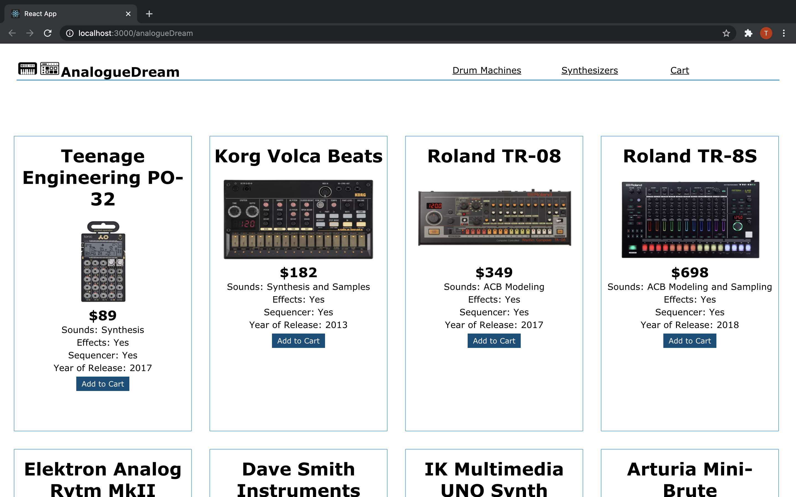
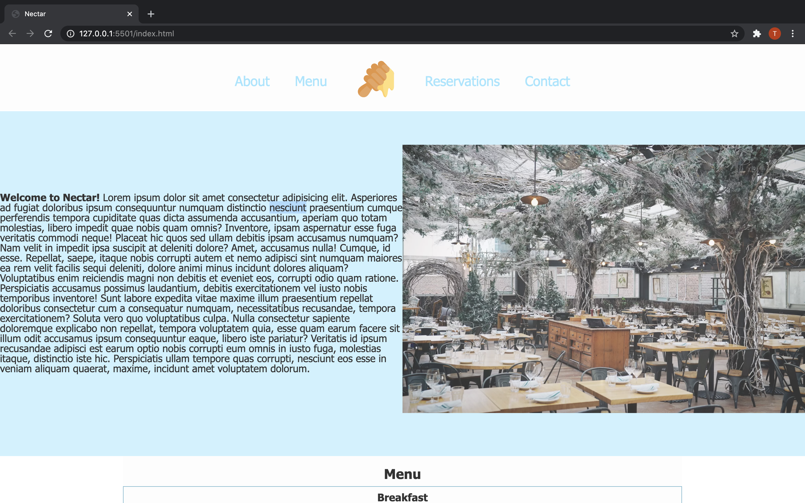

AnalogueDream
https://github.com/tibraj/analogueDream
eCommerce site organizing the sale of musical equipment
● UI created with React
● Utilizes the Stripe API

LiteraryEssays
https://github.com/tibraj/LiteraryEssays
Social media application where users can create, rate and comment on essays
● Managed backend user and essay data with Ruby on Rails
● UI created with React
● Implemented CRUD functionality in the backend using Ruby on Rails
Nectar Menu
https://github.com/tibraj/NectarMenu
Restaurant menu application
● Built using vanilla Javascript
